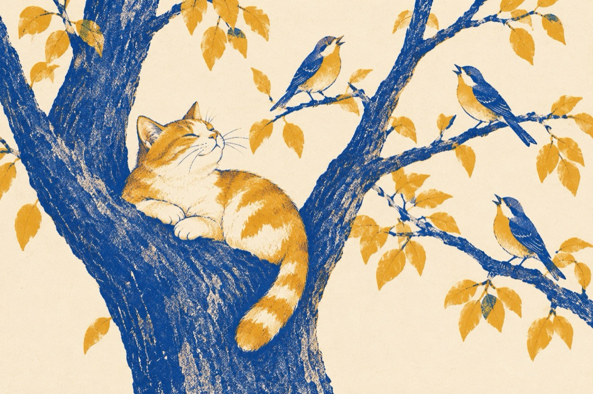

Să fie clar
Eu la mintea care-o am
Pot dormi și-n coștereață
Pot să stau și-ntr-un ghiozdan
Dacă nu mai sunt în viață
Sau la gâtul unei doamne
Și de ce nu și-un manșon
Să intru în coștereață când câinele doarme
Nopțile eu nu mai am somn
Sunt jignită deseori că dorm în bârlog
Și e un mare adevăr
De ce n-aș face-o mă rog
Acolo-s în siguranță ca într-un buncăr
Iar când vreau să mă desfăț mă urc în copac
Și las păsările să îmi cânte
Și nimic eu nu le fac
Ele vor să mă încânte.
Vasile Groza
Apare și în: Poezii cu animale.